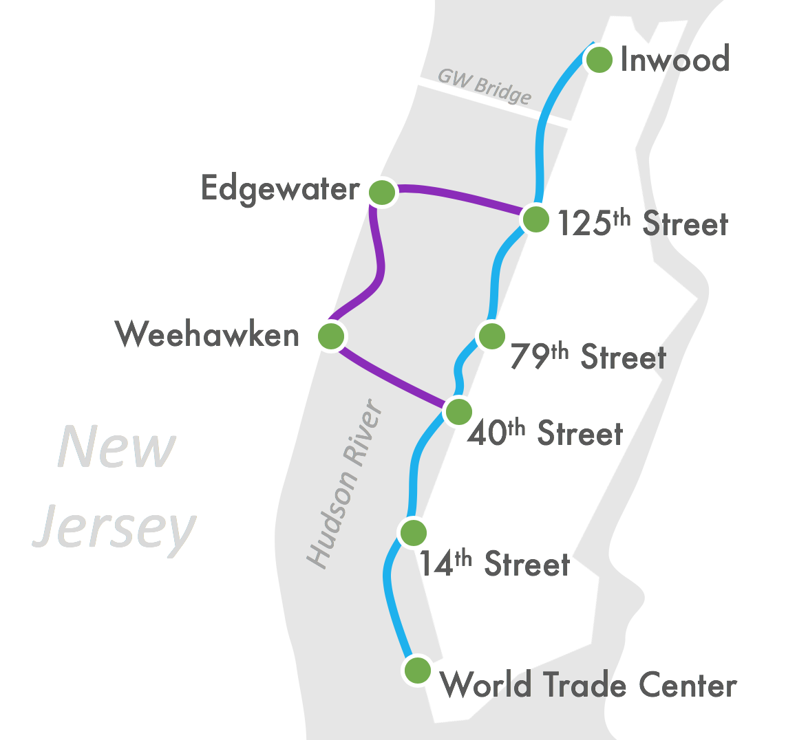

Bring New Ferry Lines to Harlem, UWS, & North Jersey
New York City is becoming a greener and more connected city with growing ferry network. The next step should be bringing ferry service to the Upper West Side, Harlem, and Inwood while also connecting the City to commuters in North Jersey.

Why Ferries Uptown?
- Connect Harlem to Other Hubs
- Help Uptown Residents Access Jobs in Bergen County
- Bring NJ customers to Northern Manhattan businesses
- Reduce Congestion on George Washington Bridge
- Easy Stress on 1 and A subway trains
- Faster Commutes Downtown
- Include Upper Manhattan in Growing Ferry Network
- Green Transit Option
- Accomidate New Westside Devlopment--Hudson Yards & Columbia’s Manhattanville Campus
Tell Mayor DeBlasio to Bring Ferries Uptown!
Since 2015, NYC ferry service has carried over 4.6 million commuters across our myriad waterways. However, the City’s initial plans disappointingly left out the entire West Side of Manhattan. This omission is particularly glaring at West 125th Street, where uptown's main east-west thoroughfare meets the Hudson River. After years of neglect, the 2009 re-opening of the West Harlem Piers included infrastructure for a new ferry landing--making this site an ideal location for NYC ferry service.
Press
We Support Ferries Uptown!